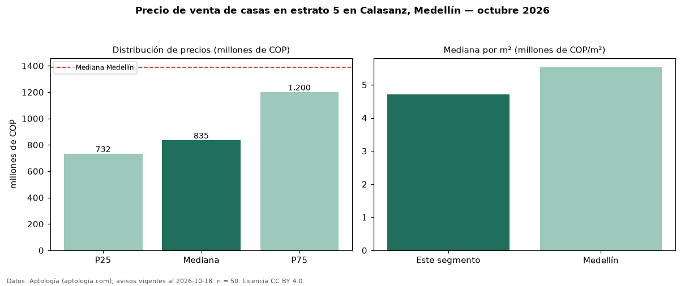

Precio de venta de casas en estrato 5 en Calasanz, Medellín — octubre 2026
COP 835 millones es el precio mediano de casas en estrato 5 en venta en Calasanz, Medellín (n = 50 avisos). Eso es 25 % más que la mediana de toda la vivienda de estrato 5 de Calasanz (COP 670 millones, n = 154); este segmento reúne el 32 % de esos avisos. Por metro cuadrado, la mediana es COP 4,71 millones/m² (n = 49), 18 % por debajo del conjunto de referencia (COP 5,72 millones/m²). El área mediana anunciada es 190 m². El segmento con más oferta es el de 3 o más habitaciones (50 avisos, mediana COP 835 millones). La administración mediana declarada es COP 435.000 al mes (n = 18). La mediana de todas las casas en venta de Medellín es COP 1,39 mil millones (−40 % de diferencia). La mitad central de los avisos va de COP 732 millones a COP 1,20 mil millones (razón 1,6), una dispersión moderada. Datos: Aptología (aptologia.com), CC BY 4.0 — https://www.aptologia.com/casas-en-venta/medellin/calasanz. Archivos: PDF, CSV con las cifras y gráfica PNG.

| Avisos únicos | 50 |
|---|---|
| Percentil 25 | COP 732.500.000 |
| Mediana | COP 835.000.000 |
| Percentil 75 | COP 1.200.000.000 |
| Mediana por m² | COP 4.705.882 |
Fuente: avisos vigentes de portales inmobiliarios recopilados por Aptología, deduplicados (mínimo 30 avisos únicos por celda). Precios pedidos, no cerrados. Fecha: 2026-10-18.